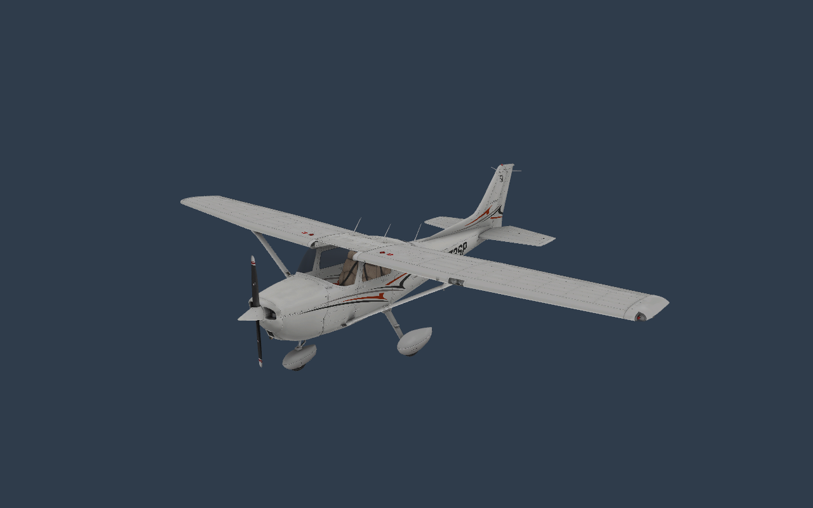
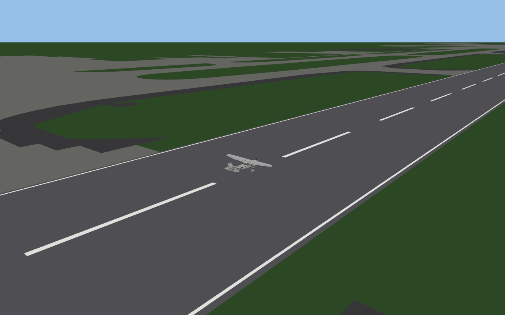
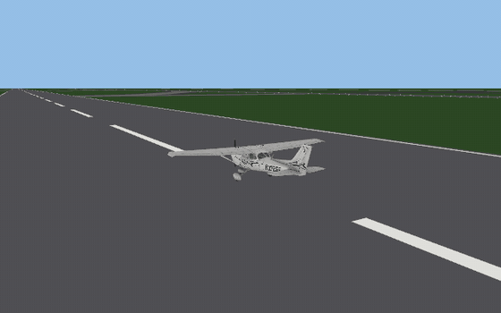
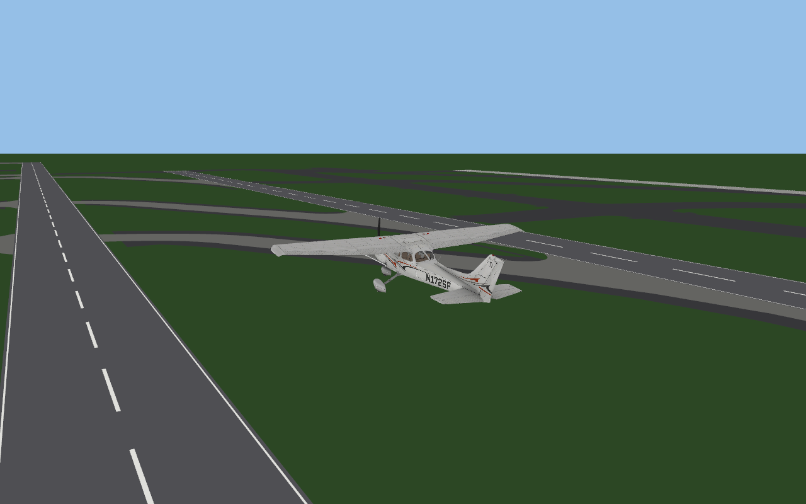

You need the original X-Plane 12
openXplane contains no game content. It reads the aircraft, models, airfoils and airports of an installed copy of X-Plane 12 and never modifies its files.
What is openXplane?
openXplane is a project to recreate the flight simulator X-Plane 12 from the ground up in Rust. Content formats - ACF aircraft, OBJ8 models, AFL airfoils, apt.dat airports - are read the same way as in the original, and behaviour is confirmed by analysing the reference build and comparing against it. Underneath is a new engine: 64-bit, a modern renderer, none of the limits of a 32-bit process.


apt.dat: runways, taxiways, aprons with holes, and the Cessna on 16L.

1:1 with the original
Every step is confirmed by analysing the reference build and comparing against it. Unknowns are not guessed.
No original code or assets
Nothing from the original is copied. Formats are described in our own words in the documentation.
A modern engine
Rust and wgpu: Metal, Vulkan, DirectX 12. 64-bit, multithreaded content loading.
Airfoil aerodynamics
34 AFL airfoils: table lookup, stall with hysteresis, buffet and regime blending. Details
Fly the Cessna
Take off from the airport scene with an approximate flight model (not the original's) and fly it with the keyboard.
Airports
Streaming parser for the 380 MB apt.dat, with runways and pavement outlines drawn as a ground scene.
Datarefs
A typed registry that preserves the original's float32 behaviour.
Open research
Every subsystem is written up in research/ notes with addresses and the limits of what is known.